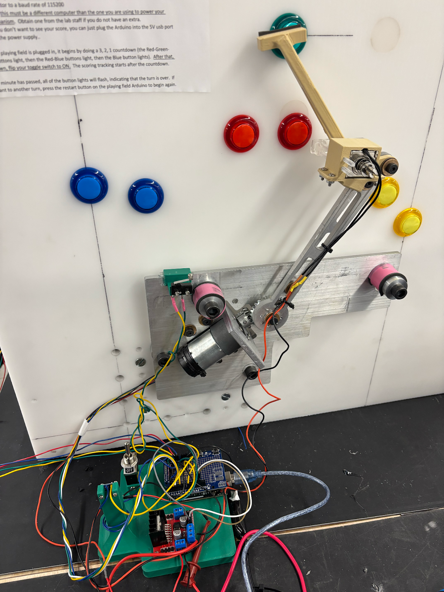
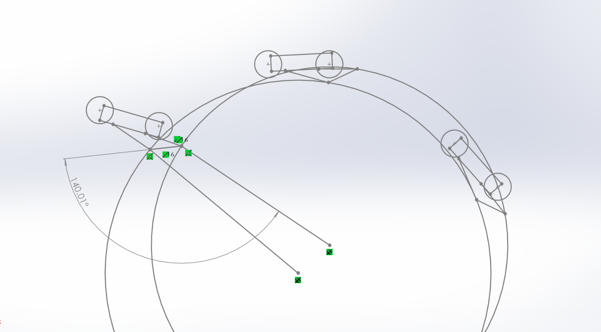
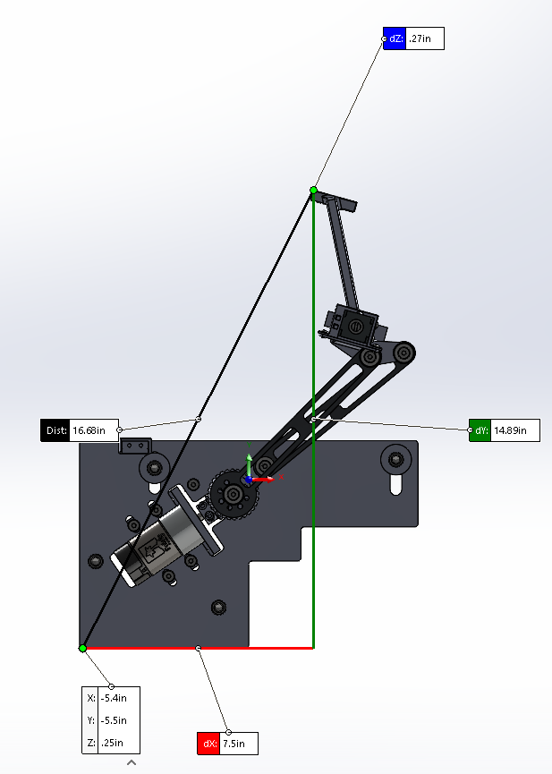
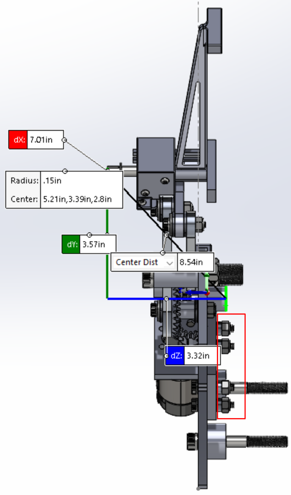

In my Machine Design course, my team designed, built, and tested an automated linkage mechanism that could rapidly press arcade buttons in sequence under strict timing constraints.
The system used a DC motor with encoder feedback in closed-loop position control and required repeatable high-speed accuracy.
I contributed across the full design cycle: linkage kinematics, CAD and drawings, transmission trade studies, electronics integration, and iterative PID tuning.

We began with geometric motion planning in SolidWorks, optimizing linkage lengths and pivot placement so the mechanism could reach all button locations while minimizing inertia. I developed the initial SolidWorks sketch used to size the arms and hit all three buttons.
I focused on reducing travel distance and unnecessary mass which was critical for fast dynamic response.
After sketch-level optimization, I helped develop the full CAD assembly with manufacturable tolerancing, spacers, and bearing-supported joints.
Design decisions emphasized stiffness, alignment, and smooth repeatable rotation.


A major portion of our effort was transmission engineering.
While inertia-matching suggested a ratio near 1.25, we selected a 2:1 bevel gear reduction to improve control resolution and simplify implementation within budget.
We incorporated adjustable mounting by encorporating slots within the ground plate to reduce backlash and maximize repeatability.
For the bonus green button, we performed actuation trade studies considering force output, speed, reliability, and integration volume.
We selected a solenoid-based pressing mechanism for rapid consistent engagement without slowing the primary linkage motion.
I supported mechanical assembly and integration, ensuring the solenoid interface aligned correctly and the linkage operated smoothly under load.
After finalizing the CAD, we transitioned into manufacturing.
The linkage components required tight hole spacing and accurate tolerancing to minimize play and ensure smooth motion throughout the mechanism.
We began by waterjetting the rough arm profiles, then used a mill to machine all critical holes, slots, and mounting features to their final dimensions.
To improve rotational performance and reduce friction, we press-fit oil-embedded sleeve bearings into the linkage joints using an arbor press, ensuring consistent alignment.
I assisted with iterative PID tuning and testing, adjusting gains to reduce overshoot, compensate for backlash, and improve repeatability across button sequences.
Early testing required extensive iteration. Below are examples of PID instability caused by backlash, rebound at hard stops, and inconsistent button contact.
The final integrated mechanism successfully executed closed-loop motion control, transmission-driven positioning, and solenoid actuation to hit all buttons reliably.
This project gave me full-cycle experience across mechanical design, manufacturing, transmission tradeoffs, electronics validation, and controls tuning.